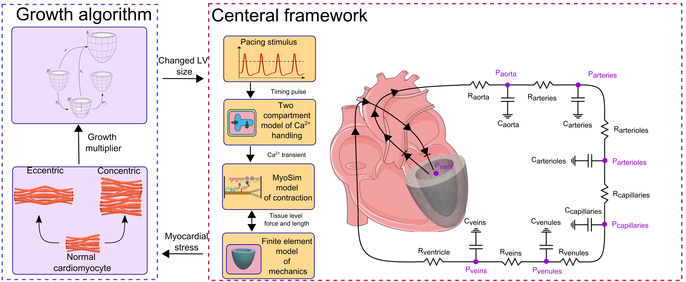
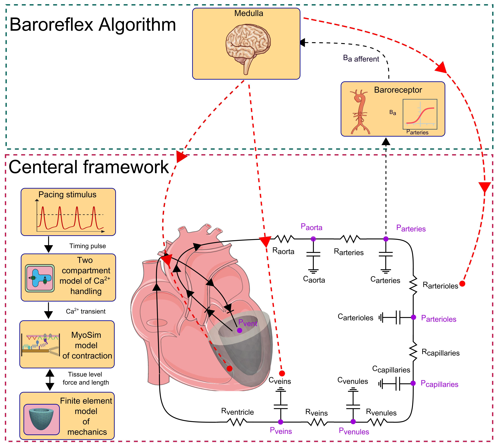

My work spans algorithm development, finite element modeling, data analysis, and machine learning, with applications in cardiac simulations and beyond. Below are key experiences showcasing my expertise in computational science and engineering. Click "Read More" to explore detailed insights for each project.
Cardiac Electrophysiology Simulation at Genetesis

Developed multiscale FEA models using FEniCS to simulate cardiac electrophysiology, enhancing diagnostic accuracy for CardioFlux magnetocardiograms. Led inverse modeling algorithms and data visualization for clinical validation.
Skills: Algorithm Development, FEA, Python (FEniCS, pandas), Data Analysis, Signal Processing
At Genetesis, I designed and implemented multiscale finite element models to simulate cardiac electrophysiology, focusing on magnetocardiograms (MCGs) for non-invasive cardiac diagnostics. Using FEniCS, I developed algorithms to reconstruct the heart’s anatomical shape from MCG signals and investigated the impact of cardiac diseases on magnetic fields, validated against clinical data. I also led the development of an inverse modeling algorithm, collaborating with R&D teams to drive product innovation. My Python scripts automated post-processing and visualization, enabling weekly progress reports to stakeholders.
ENRICHMENT In Silico Clinical Trial Project at Dassault Systèmes
Demonstration of virtual twin simulations for in silico clinical trials in the ENRICHMENT project.
Contributed to the FDA-collaborated ENRICHMENT project, developing Abaqus-based FEM simulations for cardiovascular devices and machine learning models for virtual patient cohorts. Supported the ENRICHMENT Playbook for regulatory in silico clinical trials.
As a Biomechanical Engineer Intern at Dassault Systèmes, I played a key role in the ENRICHMENT In Silico Clinical Trial Project, a 5-year collaboration with the U.S. FDA to advance regulatory approval of cardiovascular devices using virtual twins. Building on the Living Heart Project’s simulated 3D heart model, I contributed to the following:
Developed finite element models (FEM) in Abaqus to simulate MitraClip deployment for mitral valve repair, validating device performance against clinical benchmarks.
Integrated machine learning (scikit-learn) to create surrogate models for virtual patient cohorts, enabling scalable in silico clinical trials.
Incorporated baroreflex feedback loops into cardiac circulation models, enhancing simulation realism for hemodynamic studies.
Collaborated with FDA advisors and clinical experts to align simulations with regulatory requirements, supporting the 21st Century Cures Act.
Contributed to the ENRICHMENT Playbook, a peer-reviewed guide for establishing credibility in in silico trials, published in 2024.
My work on the 3DEXPERIENCE platform facilitated virtual collaboration among multidisciplinary teams, accelerating trial design and reducing reliance on animal testing. I presented simulation results to principal investigators, driving innovations in device evaluation workflows and regulatory science.
MyoFE: Multiscale Cardiac Modeling

Developed MyoFE, a multiscale FEA model of the left ventricle with baroreflex control, simulating cardiac mechanics and arterial pressure regulation. Published findings on valvular disease impacts.
Skills: Algorithm Development, FEA, Python (FEniCS), Research, Data Analysis
MyoFE is a multiscale finite element model I developed to simulate left ventricular mechanics, integrating a baroreflex feedback loop to regulate arterial pressure. Using FEniCS, I coupled molecular-level myofilament dynamics with organ-level circulation, modulating parameters like heart rate and vascular tone. The model accurately simulated valvular diseases (e.g., aortic stenosis, mitral regurgitation) and their impact on LV growth, as published in journals like Comput Biol Med. My work demonstrated the critical role of baroreflex in realistic hemodynamics, paving the way for computational studies of cardiac remodeling.
PyMyoVent: LV Growth Simulation
Built PyMyoVent, a Python-based model simulating left ventricular growth in valvular diseases. Extended with growth algorithms to predict concentric and eccentric remodeling, validated against clinical data.
Skills: Algorithm Development, Python, Research, Data Visualization
PyMyoVent is a Python-based framework I developed to simulate left ventricular function and growth in response to valvular diseases like aortic stenosis and mitral regurgitation. I extended the model with a growth algorithm based on volumetric growth theory, where concentric growth (wall thickening) responds to total fiber stress and eccentric growth (chamber dilation) to passive stress. The framework, validated against clinical measures, predicted LV remodeling and reversal post-treatment, as published in Ann Biomed Eng. A YouTube demo showcases its capabilities, and the open-source code is widely used in cardiac research.
PyCMLutil: Data Analysis Toolkit
Created PyCMLutil, a Python library for curve-fitting, plotting, and data analysis, streamlining scientific visualization workflows for cardiac research.
Skills: Python (pandas, Matplotlib), Data Analysis, Software Development
PyCMLutil is a Python library I developed to streamline data analysis and visualization for cardiac research. It provides tools for curve-fitting, plotting, and processing large datasets, leveraging libraries like pandas and Matplotlib. The library, available on PyPI, has been adopted by researchers for its user-friendly interface and robust functionality. I designed it to automate repetitive tasks in scientific workflows, such as generating publication-quality plots, significantly improving efficiency in multidisciplinary projects.
Myocardial Strain Analysis in Mice
Quantified myocardial strain in mouse hearts using CMR feature-tracking, collaborating with physiologists to analyze MRI data and predict cardiac function.
Skills: Data Analysis, Image Processing, Research, MATLAB
In collaboration with the University of Kentucky’s Department of Physiology, I analyzed cardiac magnetic resonance (CMR) images to quantify myocardial strain in mouse models using feature-tracking techniques. Leveraging MATLAB for image processing, I developed workflows to extract systolic strain data, correlating it with contractile function to predict cardiac outcomes. This research, published in Cardiovasc Eng Tech, provided insights into heart disease mechanisms, demonstrating the potential of CMR strain analysis as a diagnostic tool in preclinical studies.
Interested in collaborating or learning more about my work? Feel free to contact me!